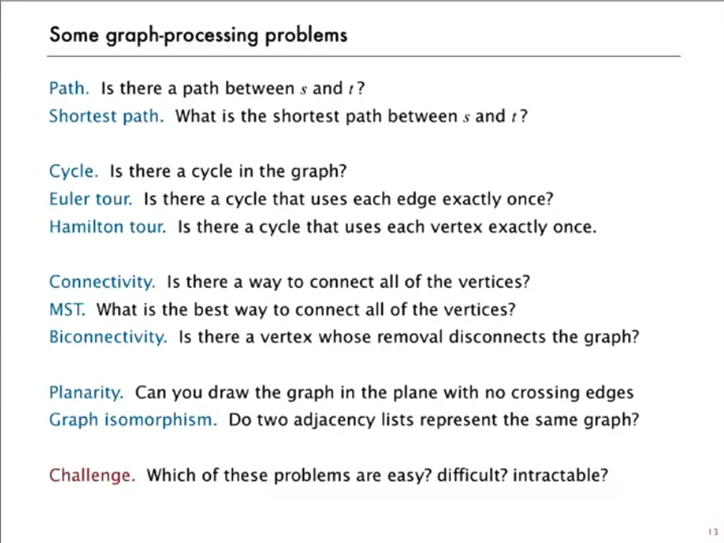
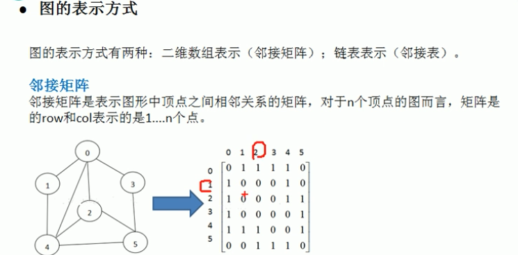
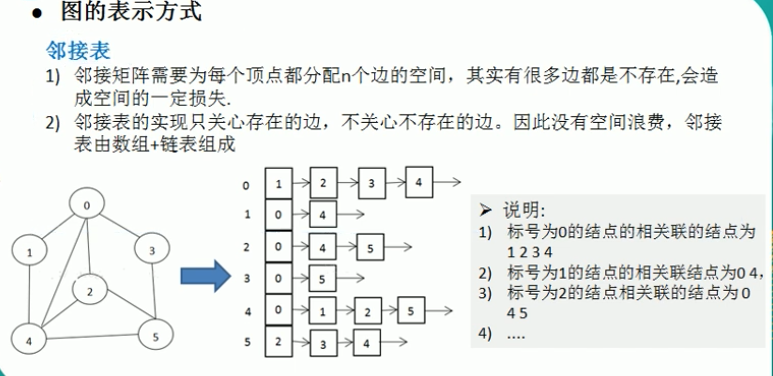

Graph
Last updated: Feb 28, 2026Table of Contents
- Overview
- Key Properties
- Core Characteristics
- Graph Representations
- Problem Categories
- Category 1: Graph Traversal
- Category 2: Shortest Path
- Category 3: Union-Find (DSU)
- Category 4: Topological Sort
- Category 5: Bipartite Graphs
- Category 6: Minimum Spanning Tree
- Templates & Algorithms
- Template Comparison Table
- Universal Graph Template
- Template 1: BFS Traversal
- Template 2: DFS Traversal
- Template 3: Union-Find (DSU)
- Template 4: Topological Sort (DFS)
- Template 5: Topological Sort (BFS/Kahn’s)
- Template 6: Bipartite Graph Checking
- Template 7: Shortest Path Algorithms
- Template 8: Tarjan’s Algorithm (Graph Connectivity)
- Problems by Pattern
- Graph Traversal Problems
- Shortest Path Problems
- Union-Find Problems
- Topological Sort Problems
- Bipartite Problems
- Advanced Graph Problems
- 2) LC Example
- 2-1) Closest Leaf in a Binary Tree
- 2-2) Number of Connected Components in an Undirected Graph
- 2-3) Clone Graph
- 2-4) Bus Routes
- 2-5) Course Schedule
- Decision Framework
- Pattern Selection Strategy
- Algorithm Selection Guide
- Summary & Quick Reference
- Complexity Quick Reference
- Graph Building Patterns
- Common Patterns & Tricks
- Problem-Solving Steps
- Common Mistakes & Tips
- Interview Tips
- Related Topics
- 2-6) Find Eventual Safe States
Graph Algorithms
Overview
Graph algorithms are techniques for solving problems on graph data structures consisting of vertices (nodes) and edges (connections between nodes).
Key Properties
- Time Complexity: O(V + E) for traversal, varies for other algorithms
- Space Complexity: O(V) for adjacency list, O(V²) for matrix
- Core Idea: Model relationships and connections between entities
- When to Use: Network problems, dependencies, paths, connectivity
- Key Algorithms: BFS, DFS, Dijkstra, Union-Find, Topological Sort
Core Characteristics
- Directed vs Undirected: One-way or two-way edges
- Weighted vs Unweighted: Edges with or without costs
- Cyclic vs Acyclic: Contains cycles or not
- Connected vs Disconnected: All nodes reachable or not
Graph Representations
- Adjacency List: Space O(V + E), efficient for sparse graphs
- Adjacency Matrix: Space O(V²), efficient for dense graphs
- Edge List: Space O(E), simple but less efficient

Problem Categories
Category 1: Graph Traversal
- Description: Explore all nodes using BFS or DFS
- Examples: LC 200 (Number of Islands), LC 133 (Clone Graph)
- Pattern: Visit all connected components
Category 2: Shortest Path
- Description: Find minimum distance between nodes
- Examples: LC 743 (Network Delay), LC 787 (Cheapest Flights)
- Pattern: Dijkstra, Bellman-Ford, Floyd-Warshall
Category 3: Union-Find (DSU)
- Description: Detect cycles, find connected components
- Examples: LC 684 (Redundant Connection), LC 721 (Accounts Merge)
- Pattern: Union by rank, path compression
Category 4: Topological Sort
- Description: Order nodes with dependencies
- Examples: LC 207 (Course Schedule), LC 210 (Course Schedule II)
- Pattern: DFS or Kahn’s algorithm (BFS)
Category 5: Bipartite Graphs
- Description: Check if graph can be colored with 2 colors
- Examples: LC 785 (Is Graph Bipartite), LC 886 (Possible Bipartition)
- Pattern: BFS/DFS with coloring
Category 6: Minimum Spanning Tree
- Description: Connect all nodes with minimum cost
- Examples: LC 1135 (Connecting Cities), LC 1584 (Min Cost Connect Points)
- Pattern: Kruskal’s or Prim’s algorithm
Templates & Algorithms
Template Comparison Table
| Template Type | Use Case | Time Complexity | When to Use |
|---|---|---|---|
| BFS | Level-order, shortest path | O(V + E) | Unweighted shortest path |
| DFS | All paths, cycle detection | O(V + E) | Explore all possibilities |
| Union-Find | Connected components | O(α(n)) | Dynamic connectivity |
| Dijkstra | Weighted shortest path | O((V+E)logV) | Non-negative weights |
| Topological | Dependencies | O(V + E) | DAG ordering |
Universal Graph Template
1def graph_algorithm(n, edges):
2 # Build adjacency list
3 graph = collections.defaultdict(list)
4 for u, v in edges:
5 graph[u].append(v)
6 graph[v].append(u) # For undirected
7
8 # Track visited nodes
9 visited = set()
10
11 # Process each component
12 result = 0
13 for node in range(n):
14 if node not in visited:
15 # Process component
16 process_component(node, graph, visited)
17 result += 1
18
19 return result
Template 1: BFS Traversal
1def bfs_template(graph, start):
2 """Breadth-first search template"""
3 from collections import deque
4
5 visited = set([start])
6 queue = deque([start])
7 level = 0
8
9 while queue:
10 # Process level by level
11 size = len(queue)
12 for _ in range(size):
13 node = queue.popleft()
14
15 # Process node
16 for neighbor in graph[node]:
17 if neighbor not in visited:
18 visited.add(neighbor)
19 queue.append(neighbor)
20 level += 1
21
22 return level
Template 2: DFS Traversal
1def dfs_template(graph, start):
2 """Depth-first search template"""
3 visited = set()
4 path = []
5
6 def dfs(node):
7 visited.add(node)
8 path.append(node)
9
10 for neighbor in graph[node]:
11 if neighbor not in visited:
12 dfs(neighbor)
13
14 # Backtrack if needed
15 # path.pop()
16
17 dfs(start)
18 return visited
Template 3: Union-Find (DSU)
1class UnionFind:
2 def __init__(self, n):
3 self.parent = list(range(n))
4 self.rank = [0] * n
5 self.count = n
6
7 def find(self, x):
8 """Find with path compression"""
9 if self.parent[x] != x:
10 self.parent[x] = self.find(self.parent[x])
11 return self.parent[x]
12
13 def union(self, x, y):
14 """Union by rank"""
15 px, py = self.find(x), self.find(y)
16 if px == py:
17 return False
18
19 if self.rank[px] < self.rank[py]:
20 px, py = py, px
21 self.parent[py] = px
22 if self.rank[px] == self.rank[py]:
23 self.rank[px] += 1
24
25 self.count -= 1
26 return True
27
28 def connected(self, x, y):
29 return self.find(x) == self.find(y)
Template 4: Topological Sort (DFS)
1def topological_sort_dfs(n, edges):
2 """Topological sort using DFS"""
3 graph = collections.defaultdict(list)
4 for u, v in edges:
5 graph[u].append(v)
6
7 # 0: unvisited, 1: visiting, 2: visited
8 state = [0] * n
9 result = []
10
11 def dfs(node):
12 if state[node] == 1: # Cycle detected
13 return False
14 if state[node] == 2: # Already processed
15 return True
16
17 state[node] = 1 # Mark as visiting
18 for neighbor in graph[node]:
19 if not dfs(neighbor):
20 return False
21
22 state[node] = 2 # Mark as visited
23 result.append(node)
24 return True
25
26 for i in range(n):
27 if state[i] == 0:
28 if not dfs(i):
29 return [] # Cycle exists
30
31 return result[::-1]
Template 5: Topological Sort (BFS/Kahn’s)
1def topological_sort_bfs(n, edges):
2 """Kahn's algorithm for topological sort"""
3 from collections import deque
4
5 graph = collections.defaultdict(list)
6 indegree = [0] * n
7
8 for u, v in edges:
9 graph[u].append(v)
10 indegree[v] += 1
11
12 queue = deque([i for i in range(n) if indegree[i] == 0])
13 result = []
14
15 while queue:
16 node = queue.popleft()
17 result.append(node)
18
19 for neighbor in graph[node]:
20 indegree[neighbor] -= 1
21 if indegree[neighbor] == 0:
22 queue.append(neighbor)
23
24 return result if len(result) == n else []
Template 6: Bipartite Graph Checking
Definition: A graph is bipartite if its vertices can be colored using only two colors such that no two adjacent vertices have the same color. Equivalent to checking if the graph has no odd-length cycles.
Time Complexity: O(V + E) - visit each vertex and edge once Space Complexity: O(V) - for color array and queue/recursion stack
Use Cases:
- Graph coloring problems
- Matching problems (assignment, scheduling)
- Conflict detection
- Resource allocation
- Network flow problems
Key Properties:
- All trees are bipartite
- Graphs with odd cycles are NOT bipartite
- Complete bipartite graphs K(m,n) are bipartite
- Can be solved using BFS or DFS with 2-coloring
Approach 1: BFS with Coloring
1def is_bipartite_bfs(graph):
2 """Check if graph is bipartite using BFS"""
3 from collections import deque
4
5 n = len(graph)
6 colors = [-1] * n # -1: uncolored, 0: color A, 1: color B
7
8 # Handle disconnected components
9 for start in range(n):
10 if colors[start] != -1:
11 continue
12
13 # BFS coloring
14 queue = deque([start])
15 colors[start] = 0
16
17 while queue:
18 node = queue.popleft()
19
20 for neighbor in graph[node]:
21 if colors[neighbor] == -1:
22 # Color with opposite color
23 colors[neighbor] = 1 - colors[node]
24 queue.append(neighbor)
25 elif colors[neighbor] == colors[node]:
26 # Same color conflict - not bipartite
27 return False
28
29 return True
Approach 2: DFS with Coloring
1def is_bipartite_dfs(graph):
2 """Check if graph is bipartite using DFS"""
3 n = len(graph)
4 colors = [-1] * n
5
6 def dfs(node, color):
7 colors[node] = color
8
9 for neighbor in graph[node]:
10 if colors[neighbor] == -1:
11 # Recursively color with opposite color
12 if not dfs(neighbor, 1 - color):
13 return False
14 elif colors[neighbor] == colors[node]:
15 # Same color conflict
16 return False
17
18 return True
19
20 # Check each component
21 for i in range(n):
22 if colors[i] == -1:
23 if not dfs(i, 0):
24 return False
25
26 return True
Approach 3: Union-Find (Advanced)
1def is_bipartite_union_find(n, edges):
2 """Check bipartite using Union-Find for conflict detection"""
3
4 class UnionFind:
5 def __init__(self, n):
6 self.parent = list(range(2 * n)) # 2n for opposite groups
7
8 def find(self, x):
9 if self.parent[x] != x:
10 self.parent[x] = self.find(self.parent[x])
11 return self.parent[x]
12
13 def union(self, x, y):
14 px, py = self.find(x), self.find(y)
15 if px != py:
16 self.parent[px] = py
17
18 def connected(self, x, y):
19 return self.find(x) == self.find(y)
20
21 uf = UnionFind(n)
22
23 # For each edge (u,v), union u with opposite of v, and v with opposite of u
24 for u, v in edges:
25 if uf.connected(u, v): # Same group conflict
26 return False
27
28 # u should be in opposite group of v
29 uf.union(u, v + n) # u with opposite of v
30 uf.union(v, u + n) # v with opposite of u
31
32 return True
Grid-based Bipartite Check
1def is_bipartite_grid(grid):
2 """Check if grid graph is bipartite (checkerboard pattern)"""
3 rows, cols = len(grid), len(grid[0])
4 colors = [[-1] * cols for _ in range(rows)]
5 directions = [(0, 1), (1, 0), (0, -1), (-1, 0)]
6
7 def bfs(start_r, start_c):
8 from collections import deque
9 queue = deque([(start_r, start_c)])
10 colors[start_r][start_c] = 0
11
12 while queue:
13 r, c = queue.popleft()
14
15 for dr, dc in directions:
16 nr, nc = r + dr, c + dc
17
18 if 0 <= nr < rows and 0 <= nc < cols and grid[nr][nc] == 1:
19 if colors[nr][nc] == -1:
20 colors[nr][nc] = 1 - colors[r][c]
21 queue.append((nr, nc))
22 elif colors[nr][nc] == colors[r][c]:
23 return False
24 return True
25
26 # Check each component
27 for i in range(rows):
28 for j in range(cols):
29 if grid[i][j] == 1 and colors[i][j] == -1:
30 if not bfs(i, j):
31 return False
32
33 return True
Enhanced Template with Partition Information
1def bipartite_partition(graph):
2 """
3 Returns bipartite partition if exists, None otherwise
4 Returns: (setA, setB) or None
5 """
6 n = len(graph)
7 colors = [-1] * n
8
9 def dfs(node, color):
10 colors[node] = color
11
12 for neighbor in graph[node]:
13 if colors[neighbor] == -1:
14 if not dfs(neighbor, 1 - color):
15 return False
16 elif colors[neighbor] == colors[node]:
17 return False
18 return True
19
20 # Check bipartite property
21 for i in range(n):
22 if colors[i] == -1:
23 if not dfs(i, 0):
24 return None
25
26 # Create partition sets
27 setA = [i for i in range(n) if colors[i] == 0]
28 setB = [i for i in range(n) if colors[i] == 1]
29
30 return setA, setB
Related Problems & Examples
LC 785: Is Graph Bipartite
1def isBipartite(self, graph):
2 """LC 785 - Standard bipartite check"""
3 n = len(graph)
4 colors = {}
5
6 def dfs(node, color):
7 colors[node] = color
8 for neighbor in graph[node]:
9 if neighbor in colors:
10 if colors[neighbor] == colors[node]:
11 return False
12 else:
13 if not dfs(neighbor, 1 - color):
14 return False
15 return True
16
17 for i in range(n):
18 if i not in colors:
19 if not dfs(i, 0):
20 return False
21 return True
LC 886: Possible Bipartition
1def possibleBipartition(self, n, dislikes):
2 """LC 886 - Build graph from dislike relationships"""
3 from collections import defaultdict
4
5 # Build adjacency list from dislikes
6 graph = defaultdict(list)
7 for u, v in dislikes:
8 graph[u].append(v)
9 graph[v].append(u)
10
11 colors = {}
12
13 def dfs(node, color):
14 colors[node] = color
15 for neighbor in graph[node]:
16 if neighbor in colors:
17 if colors[neighbor] == colors[node]:
18 return False
19 else:
20 if not dfs(neighbor, 1 - color):
21 return False
22 return True
23
24 for i in range(1, n + 1):
25 if i not in colors:
26 if not dfs(i, 0):
27 return False
28 return True
Applications & Variations
1. Maximum Bipartite Matching
1def max_bipartite_matching(graph, n, m):
2 """Find maximum matching in bipartite graph"""
3 match = [-1] * m
4
5 def dfs(u, visited):
6 for v in graph[u]:
7 if not visited[v]:
8 visited[v] = True
9 if match[v] == -1 or dfs(match[v], visited):
10 match[v] = u
11 return True
12 return False
13
14 result = 0
15 for u in range(n):
16 visited = [False] * m
17 if dfs(u, visited):
18 result += 1
19
20 return result
2. Bipartite Graph Validation with Custom Logic
1def validate_bipartite_assignment(assignments, conflicts):
2 """
3 Validate if assignment is bipartite given conflict pairs
4 assignments: list of items to assign
5 conflicts: list of (item1, item2) that cannot be in same group
6 """
7 from collections import defaultdict
8
9 graph = defaultdict(list)
10 for u, v in conflicts:
11 graph[u].append(v)
12 graph[v].append(u)
13
14 colors = {}
15
16 def can_color(item, color):
17 if item in colors:
18 return colors[item] == color
19
20 colors[item] = color
21 for conflict_item in graph[item]:
22 if not can_color(conflict_item, 1 - color):
23 return False
24 return True
25
26 for item in assignments:
27 if item not in colors:
28 if not can_color(item, 0):
29 return False, {}
30
31 # Return partition
32 group_a = [item for item, color in colors.items() if color == 0]
33 group_b = [item for item, color in colors.items() if color == 1]
34
35 return True, {"Group A": group_a, "Group B": group_b}
Performance Comparison
| Approach | Time | Space | Best Use Case |
|---|---|---|---|
| BFS | O(V+E) | O(V) | Level-by-level processing |
| DFS | O(V+E) | O(V) | Simple recursive solution |
| Union-Find | O(E⋅α(V)) | O(V) | Dynamic conflict detection |
| Grid-specific | O(R⋅C) | O(R⋅C) | 2D grid problems |
Common Patterns & Tips
Pattern Recognition:
- Graph coloring → Bipartite check
- Conflict/compatibility → Build conflict graph
- Two groups assignment → Bipartite partition
- Matching problems → Bipartite matching
Implementation Tips:
- Always handle disconnected components
- Use 0/1 or -1/1 for colors consistently
- Check conflicts immediately when coloring
- Consider Union-Find for dynamic scenarios
Edge Cases:
- Empty graph (bipartite by definition)
- Single node (bipartite)
- No edges (bipartite)
- Self-loops (not bipartite if exists)
- Disconnected components (check all)


Template 7: Shortest Path Algorithms
Overview: Shortest Path Algorithm Comparison
| Algorithm | Time | Space | Edge Weights | Use Case | Best For |
|---|---|---|---|---|---|
| BFS | O(V+E) | O(V) | Unweighted | Single source | Unweighted graphs |
| Dijkstra | O((V+E)logV) | O(V) | Non-negative | Single source | Non-negative weights |
| Bellman-Ford | O(V⋅E) | O(V) | Any (including negative) | Single source | Negative edges, detect cycles |
| Floyd-Warshall | O(V³) | O(V²) | Any (including negative) | All pairs | Dense graphs, all-pairs |
| SPFA | O(V⋅E) avg | O(V) | Any | Single source | Sparse graphs with negative |
When to Use Each:
- BFS: Unweighted graphs, shortest path in terms of number of edges
- Dijkstra: Non-negative weights, need optimal performance
- Bellman-Ford: Negative weights exist, need to detect negative cycles
- Floyd-Warshall: Need all-pairs shortest paths, small dense graph
- SPFA (Shortest Path Faster Algorithm): Bellman-Ford optimization, average O(E)
7.1) Bellman-Ford Algorithm
Core Concept: Bellman-Ford finds shortest paths from a single source to all vertices, even with negative edge weights. It can also detect negative cycles.
Key Insight:
- Relaxes all edges V-1 times (V = number of vertices)
- After V-1 iterations, shortest paths are found (if no negative cycle)
- One more iteration detects negative cycles
Algorithm Steps:
- Initialize distances:
dist[source] = 0, all others = ∞ - Relax all edges V-1 times:
- For each edge (u, v, weight):
- If
dist[u] + weight < dist[v]: updatedist[v]
- If
- For each edge (u, v, weight):
- Check for negative cycles:
- If any edge can still be relaxed, negative cycle exists
Why V-1 Iterations?
1In a graph with V vertices, the shortest path between any two vertices
2contains at most V-1 edges (no cycles).
3
4After k iterations, we have the shortest path using at most k edges.
5After V-1 iterations, we have the shortest paths for all pairs.
Python Implementation
1# Bellman-Ford Algorithm
2def bellman_ford(n, edges, source):
3 """
4 Find shortest paths from source to all vertices.
5 Can handle negative weights and detect negative cycles.
6
7 Args:
8 n: number of vertices (0 to n-1)
9 edges: list of (u, v, weight) tuples
10 source: starting vertex
11
12 Returns:
13 dist: array of shortest distances (or None if negative cycle)
14
15 Time: O(V⋅E)
16 Space: O(V)
17 """
18 # Initialize distances
19 dist = [float('inf')] * n
20 dist[source] = 0
21
22 # Relax all edges V-1 times
23 for _ in range(n - 1):
24 updated = False
25 for u, v, weight in edges:
26 if dist[u] != float('inf') and dist[u] + weight < dist[v]:
27 dist[v] = dist[u] + weight
28 updated = True
29
30 # Early termination if no updates
31 if not updated:
32 break
33
34 # Check for negative cycles
35 for u, v, weight in edges:
36 if dist[u] != float('inf') and dist[u] + weight < dist[v]:
37 return None # Negative cycle detected
38
39 return dist
40
41# Example usage:
42# edges = [(0, 1, 4), (0, 2, 5), (1, 2, -3), (2, 3, 4)]
43# result = bellman_ford(4, edges, 0)
44# Output: [0, 4, 1, 5] (shortest distances from vertex 0)
Java Implementation
1// Bellman-Ford Algorithm
2/**
3 * LC 787 - Cheapest Flights Within K Stops (Bellman-Ford variant)
4 *
5 * time = O(V⋅E) or O(K⋅E) for K iterations
6 * space = O(V)
7 */
8class Solution {
9 public int[] bellmanFord(int n, int[][] edges, int src) {
10 // Initialize distances
11 int[] dist = new int[n];
12 Arrays.fill(dist, Integer.MAX_VALUE);
13 dist[src] = 0;
14
15 // Relax edges V-1 times
16 for (int i = 0; i < n - 1; i++) {
17 boolean updated = false;
18
19 for (int[] edge : edges) {
20 int u = edge[0];
21 int v = edge[1];
22 int weight = edge[2];
23
24 if (dist[u] != Integer.MAX_VALUE && dist[u] + weight < dist[v]) {
25 dist[v] = dist[u] + weight;
26 updated = true;
27 }
28 }
29
30 // Early termination
31 if (!updated) break;
32 }
33
34 // Check for negative cycle
35 for (int[] edge : edges) {
36 int u = edge[0];
37 int v = edge[1];
38 int weight = edge[2];
39
40 if (dist[u] != Integer.MAX_VALUE && dist[u] + weight < dist[v]) {
41 return null; // Negative cycle detected
42 }
43 }
44
45 return dist;
46 }
47}
Visual Example
1Graph with negative edge:
2 0 --4--> 1
3 | / |
4 5 -3 |
5 | / 4
6 v v v
7 2 --------> 3
8
9Edges: [(0,1,4), (0,2,5), (1,2,-3), (2,3,4)]
10
11Iteration 0 (Initial):
12dist = [0, ∞, ∞, ∞]
13
14Iteration 1:
15Edge (0,1,4): dist[1] = 0 + 4 = 4
16Edge (0,2,5): dist[2] = 0 + 5 = 5
17Edge (1,2,-3): dist[2] = min(5, 4-3) = 1
18Edge (2,3,4): dist[3] = 1 + 4 = 5
19dist = [0, 4, 1, 5]
20
21Iteration 2:
22Edge (1,2,-3): dist[2] = min(1, 4-3) = 1 (no change)
23Edge (2,3,4): dist[3] = min(5, 1+4) = 5 (no change)
24No updates → Early termination
25
26Final: dist = [0, 4, 1, 5] ✓
Negative Cycle Detection
1# Example with negative cycle
2def detect_negative_cycle(n, edges):
3 """
4 Detect if graph contains a negative cycle.
5
6 Time: O(V⋅E)
7 Space: O(V)
8 """
9 # Pick arbitrary source (negative cycle affects all paths)
10 source = 0
11 dist = [float('inf')] * n
12 dist[source] = 0
13
14 # Relax V-1 times
15 for _ in range(n - 1):
16 for u, v, weight in edges:
17 if dist[u] != float('inf') and dist[u] + weight < dist[v]:
18 dist[v] = dist[u] + weight
19
20 # Check if can still relax
21 for u, v, weight in edges:
22 if dist[u] != float('inf') and dist[u] + weight < dist[v]:
23 return True # Negative cycle exists
24
25 return False
26
27# Example: edges = [(0,1,1), (1,2,-3), (2,0,1)]
28# Forms cycle: 0→1→2→0 with total weight 1-3+1 = -1
29# Returns: True
7.2) Floyd-Warshall Algorithm
Core Concept: Floyd-Warshall finds all-pairs shortest paths in a weighted graph using dynamic programming. Works with negative weights but not negative cycles.
Key Insight:
- DP approach: For each pair (i, j), try all intermediate vertices k
dist[i][j] = min(dist[i][j], dist[i][k] + dist[k][j])- After considering all k, we have shortest paths for all pairs
Algorithm Steps:
- Initialize
dist[i][j]:dist[i][i] = 0(same vertex)dist[i][j] = weight(i, j)if edge existsdist[i][j] = ∞otherwise
- For each intermediate vertex k (0 to n-1):
- For each pair (i, j):
dist[i][j] = min(dist[i][j], dist[i][k] + dist[k][j])
- For each pair (i, j):
Why It Works:
1After considering vertices {0, 1, ..., k} as intermediate:
2dist[i][j] = shortest path from i to j using only vertices {0...k}
3
4When k = n-1, we've considered all possible intermediates
5→ dist[i][j] = shortest path from i to j
Python Implementation
1# Floyd-Warshall Algorithm
2def floyd_warshall(n, edges):
3 """
4 Find all-pairs shortest paths.
5
6 Args:
7 n: number of vertices (0 to n-1)
8 edges: list of (u, v, weight) tuples
9
10 Returns:
11 dist: 2D array where dist[i][j] = shortest path from i to j
12
13 Time: O(V³)
14 Space: O(V²)
15 """
16 # Initialize distance matrix
17 dist = [[float('inf')] * n for _ in range(n)]
18
19 # Distance from vertex to itself is 0
20 for i in range(n):
21 dist[i][i] = 0
22
23 # Fill in edge weights
24 for u, v, weight in edges:
25 dist[u][v] = weight
26 # For undirected graphs, uncomment:
27 # dist[v][u] = weight
28
29 # Dynamic programming: try all intermediate vertices
30 for k in range(n):
31 for i in range(n):
32 for j in range(n):
33 # Can we improve path i→j by going through k?
34 if dist[i][k] != float('inf') and dist[k][j] != float('inf'):
35 dist[i][j] = min(dist[i][j], dist[i][k] + dist[k][j])
36
37 # Check for negative cycles
38 for i in range(n):
39 if dist[i][i] < 0:
40 return None # Negative cycle detected
41
42 return dist
43
44# Example usage:
45# edges = [(0,1,3), (1,2,1), (0,2,7), (2,3,2)]
46# result = floyd_warshall(4, edges)
47# result[i][j] = shortest distance from i to j
Java Implementation
1// Floyd-Warshall Algorithm
2/**
3 * LC 1334 - Find the City With the Smallest Number of Neighbors
4 *
5 * time = O(V³)
6 * space = O(V²)
7 */
8class Solution {
9 public int[][] floydWarshall(int n, int[][] edges) {
10 // Initialize distance matrix
11 int[][] dist = new int[n][n];
12
13 // Fill with infinity
14 for (int i = 0; i < n; i++) {
15 Arrays.fill(dist[i], Integer.MAX_VALUE / 2); // Avoid overflow
16 dist[i][i] = 0; // Distance to self is 0
17 }
18
19 // Add edge weights
20 for (int[] edge : edges) {
21 int u = edge[0];
22 int v = edge[1];
23 int weight = edge[2];
24 dist[u][v] = weight;
25 dist[v][u] = weight; // For undirected graph
26 }
27
28 // Floyd-Warshall: try all intermediate vertices
29 for (int k = 0; k < n; k++) {
30 for (int i = 0; i < n; i++) {
31 for (int j = 0; j < n; j++) {
32 // Relax through vertex k
33 dist[i][j] = Math.min(dist[i][j], dist[i][k] + dist[k][j]);
34 }
35 }
36 }
37
38 return dist;
39 }
40}
Visual Example
1Graph:
2 0 --3--> 1
3 | |
4 7 1
5 | |
6 v v
7 2 <--2-- 3
8
9Initial distance matrix:
10 0 1 2 3
110 [ 0 3 7 ∞ ]
121 [ ∞ 0 ∞ 1 ]
132 [ ∞ ∞ 0 ∞ ]
143 [ ∞ ∞ 2 0 ]
15
16After k=0 (intermediate vertex 0):
17No changes (0 is only source, not intermediate)
18
19After k=1 (intermediate vertex 1):
20dist[0][3] = min(∞, dist[0][1] + dist[1][3]) = min(∞, 3+1) = 4
21 0 1 2 3
220 [ 0 3 7 4 ]
231 [ ∞ 0 ∞ 1 ]
242 [ ∞ ∞ 0 ∞ ]
253 [ ∞ ∞ 2 0 ]
26
27After k=2:
28No improvements
29
30After k=3 (intermediate vertex 3):
31dist[0][2] = min(7, dist[0][3] + dist[3][2]) = min(7, 4+2) = 6
32dist[1][2] = min(∞, dist[1][3] + dist[3][2]) = min(∞, 1+2) = 3
33
34Final:
35 0 1 2 3
360 [ 0 3 6 4 ]
371 [ ∞ 0 3 1 ]
382 [ ∞ ∞ 0 ∞ ]
393 [ ∞ ∞ 2 0 ]
Path Reconstruction
1# Floyd-Warshall with path reconstruction
2def floyd_warshall_with_path(n, edges):
3 """
4 Find all-pairs shortest paths and reconstruct paths.
5
6 Returns:
7 dist: shortest distances
8 next_vertex: for path reconstruction
9 """
10 dist = [[float('inf')] * n for _ in range(n)]
11 next_vertex = [[None] * n for _ in range(n)]
12
13 # Initialize
14 for i in range(n):
15 dist[i][i] = 0
16
17 for u, v, weight in edges:
18 dist[u][v] = weight
19 next_vertex[u][v] = v
20
21 # Floyd-Warshall
22 for k in range(n):
23 for i in range(n):
24 for j in range(n):
25 if dist[i][k] + dist[k][j] < dist[i][j]:
26 dist[i][j] = dist[i][k] + dist[k][j]
27 next_vertex[i][j] = next_vertex[i][k]
28
29 return dist, next_vertex
30
31def reconstruct_path(next_vertex, start, end):
32 """Reconstruct shortest path from start to end."""
33 if next_vertex[start][end] is None:
34 return []
35
36 path = [start]
37 current = start
38
39 while current != end:
40 current = next_vertex[current][end]
41 path.append(current)
42
43 return path
44
45# Example:
46# dist, next_v = floyd_warshall_with_path(4, edges)
47# path = reconstruct_path(next_v, 0, 3)
48# Output: [0, 1, 3] (path from 0 to 3)
7.3) Classic LeetCode Problems
| Problem | LC# | Algorithm | Difficulty | Key Insight |
|---|---|---|---|---|
| Network Delay Time | 743 | Bellman-Ford / Dijkstra | Medium | Single source shortest path |
| Cheapest Flights K Stops | 787 | Bellman-Ford (K iterations) | Medium | Limit iterations to K+1 |
| Find the City | 1334 | Floyd-Warshall | Medium | All-pairs, count neighbors |
| Course Schedule III | 630 | Bellman-Ford variant | Hard | With constraints |
| Minimum Cost to Reach Destination | 1928 | Bellman-Ford / Dijkstra | Hard | Modified edge costs |
| Bellman-Ford | 1724 | Bellman-Ford | Medium | Check negative cycles |
7.4) Performance Comparison & When to Use
Bellman-Ford vs Dijkstra:
| Aspect | Bellman-Ford | Dijkstra |
|---|---|---|
| Time | O(V⋅E) slower | O((V+E)logV) faster |
| Edge Weights | Any (including negative) | Non-negative only |
| Negative Cycles | Can detect | Cannot handle |
| Implementation | Simpler | More complex (priority queue) |
| Use Case | Negative weights, cycle detection | Optimal for non-negative |
Floyd-Warshall vs Running Dijkstra V times:
| Aspect | Floyd-Warshall | V × Dijkstra |
|---|---|---|
| Time | O(V³) | O(V²⋅E⋅logV) |
| Space | O(V²) | O(V) |
| Code Complexity | Simple (3 loops) | More complex |
| Best For | Dense graphs, small V | Sparse graphs, large V |
Decision Tree:
1Need shortest paths?
2├─ Single source
3│ ├─ Negative weights? → Bellman-Ford
4│ └─ Non-negative? → Dijkstra (faster)
5│
6└─ All pairs
7 ├─ Dense graph or small V? → Floyd-Warshall
8 └─ Sparse graph or large V? → Run Dijkstra V times
7.5) Interview Tips
1. Algorithm Selection:
1Q: "Find shortest path from A to B"
2→ Clarify: Negative weights? → Bellman-Ford : Dijkstra
3
4Q: "Find shortest paths between all pairs"
5→ Ask: Graph density? → Dense: Floyd-Warshall, Sparse: Dijkstra×V
6
7Q: "Detect if negative cycle exists"
8→ Use: Bellman-Ford (only algorithm that detects this)
2. Common Mistakes:
- Bellman-Ford: Forgetting to check
dist[u] != INFbefore relaxation - Floyd-Warshall: Wrong loop order (must be k→i→j, not i→j→k)
- Both: Not handling unreachable vertices (dist = INF)
- Negative cycles: Not checking after main algorithm
3. Optimization Tips:
1# Bellman-Ford: Early termination
2for iteration in range(n - 1):
3 updated = False
4 for edge in edges:
5 if relax(edge):
6 updated = True
7 if not updated:
8 break # No more improvements possible
9
10# Floyd-Warshall: Only update if improves
11if dist[i][k] + dist[k][j] < dist[i][j]:
12 dist[i][j] = dist[i][k] + dist[k][j]
4. Edge Cases:
- Graph with no edges (all distances = INF except self)
- Negative cycle (Bellman-Ford returns None)
- Disconnected graph (some distances remain INF)
- Self-loops with negative weight (negative cycle)
5. Talking Points:
- “Bellman-Ford trades time for flexibility with negative weights”
- “Floyd-Warshall is DP: optimal substructure through intermediate vertices”
- “V-1 iterations because longest simple path has V-1 edges”
- “Floyd-Warshall is simple but O(V³) limits scalability”
Template 8: Tarjan’s Algorithm (Graph Connectivity)
Overview: Tarjan’s algorithm is a DFS-based technique for finding critical graph structures:
- Strongly Connected Components (SCC) - Maximal sets of mutually reachable vertices (directed graphs)
- Bridges - Edges whose removal disconnects the graph (undirected graphs)
- Articulation Points (Cut Vertices) - Vertices whose removal disconnects the graph (undirected graphs)
Core Concept: Uses DFS with two key arrays:
disc[v]: Discovery time of vertex v (when first visited)low[v]: Lowest discovery time reachable from v’s subtree
Time Complexity: O(V + E) - single DFS traversal Space Complexity: O(V) - recursion stack + arrays
8.1) Strongly Connected Components (SCC)
Definition: In a directed graph, an SCC is a maximal set of vertices where every vertex is reachable from every other vertex in the set.
Key Insight:
- Use a stack to track vertices in current DFS path
- When
low[v] == disc[v], v is the root of an SCC - Pop all vertices from stack until v to get complete SCC
Algorithm Steps:
- Initialize
disc[],low[], and stack - DFS from each unvisited vertex
- For each vertex v:
- Set
disc[v] = low[v] = timer++ - Push v onto stack
- For each neighbor u:
- If unvisited: DFS(u), update
low[v] = min(low[v], low[u]) - If u on stack: update
low[v] = min(low[v], disc[u])
- If unvisited: DFS(u), update
- If
low[v] == disc[v]: pop stack until v to form SCC
- Set
Python Implementation
1# Tarjan's Algorithm for SCC
2def tarjan_scc(n, graph):
3 """
4 Find all strongly connected components using Tarjan's algorithm.
5
6 Args:
7 n: number of vertices (0 to n-1)
8 graph: adjacency list (directed graph)
9
10 Returns:
11 List of SCCs, where each SCC is a list of vertices
12
13 Time: O(V + E)
14 Space: O(V)
15 """
16 disc = [-1] * n # Discovery times
17 low = [-1] * n # Lowest reachable
18 on_stack = [False] * n
19 stack = []
20 sccs = []
21 timer = [0] # Use list for mutability
22
23 def dfs(v):
24 # Initialize discovery time and low value
25 disc[v] = low[v] = timer[0]
26 timer[0] += 1
27 stack.append(v)
28 on_stack[v] = True
29
30 # Explore neighbors
31 for u in graph[v]:
32 if disc[u] == -1:
33 # Unvisited neighbor
34 dfs(u)
35 low[v] = min(low[v], low[u])
36 elif on_stack[u]:
37 # Back edge to vertex on stack
38 low[v] = min(low[v], disc[u])
39
40 # If v is a root of SCC, pop the SCC
41 if low[v] == disc[v]:
42 scc = []
43 while True:
44 u = stack.pop()
45 on_stack[u] = False
46 scc.append(u)
47 if u == v:
48 break
49 sccs.append(scc)
50
51 # Run DFS from each unvisited vertex
52 for i in range(n):
53 if disc[i] == -1:
54 dfs(i)
55
56 return sccs
57
58# Example:
59# graph = {0: [1], 1: [2], 2: [0, 3], 3: [4], 4: [5], 5: [3]}
60# 0 → 1 → 2
61# ↑ ↓
62# └───────┘ 3 ⇄ 4 → 5
63# ↑ ↓
64# └───┘
65# SCCs: [[0, 2, 1], [3, 5, 4]]
Java Implementation
1// Tarjan's SCC Algorithm
2/**
3 * LC 1192 - Critical Connections in a Network (related)
4 *
5 * time = O(V + E)
6 * space = O(V)
7 */
8class TarjanSCC {
9 private int timer = 0;
10 private int[] disc;
11 private int[] low;
12 private boolean[] onStack;
13 private Stack<Integer> stack;
14 private List<List<Integer>> sccs;
15
16 public List<List<Integer>> findSCCs(int n, List<List<Integer>> graph) {
17 disc = new int[n];
18 low = new int[n];
19 onStack = new boolean[n];
20 stack = new Stack<>();
21 sccs = new ArrayList<>();
22
23 Arrays.fill(disc, -1);
24 Arrays.fill(low, -1);
25
26 // DFS from each unvisited vertex
27 for (int i = 0; i < n; i++) {
28 if (disc[i] == -1) {
29 dfs(i, graph);
30 }
31 }
32
33 return sccs;
34 }
35
36 private void dfs(int v, List<List<Integer>> graph) {
37 // Initialize
38 disc[v] = low[v] = timer++;
39 stack.push(v);
40 onStack[v] = true;
41
42 // Explore neighbors
43 for (int u : graph.get(v)) {
44 if (disc[u] == -1) {
45 // Unvisited
46 dfs(u, graph);
47 low[v] = Math.min(low[v], low[u]);
48 } else if (onStack[u]) {
49 // Back edge
50 low[v] = Math.min(low[v], disc[u]);
51 }
52 }
53
54 // Root of SCC found
55 if (low[v] == disc[v]) {
56 List<Integer> scc = new ArrayList<>();
57 while (true) {
58 int u = stack.pop();
59 onStack[u] = false;
60 scc.add(u);
61 if (u == v) break;
62 }
63 sccs.add(scc);
64 }
65 }
66}
8.2) Finding Bridges (Critical Connections)
Definition: A bridge is an edge whose removal increases the number of connected components (disconnects the graph).
Key Insight:
- Edge (u, v) is a bridge if
low[v] > disc[u] - Means v cannot reach any vertex discovered before u without using edge (u, v)
Algorithm Steps:
- Run DFS with
disc[]andlow[] - For each edge (u, v) in DFS tree:
- If
low[v] > disc[u]: (u, v) is a bridge
- If
Python Implementation
1# Tarjan's Algorithm for Bridges
2def find_bridges(n, edges):
3 """
4 Find all bridges (critical connections) in an undirected graph.
5
6 Args:
7 n: number of vertices
8 edges: list of [u, v] edges
9
10 Returns:
11 List of bridges (critical edges)
12
13 Time: O(V + E)
14 Space: O(V + E)
15 """
16 # Build adjacency list
17 graph = [[] for _ in range(n)]
18 for u, v in edges:
19 graph[u].append(v)
20 graph[v].append(u)
21
22 disc = [-1] * n
23 low = [-1] * n
24 bridges = []
25 timer = [0]
26
27 def dfs(v, parent):
28 disc[v] = low[v] = timer[0]
29 timer[0] += 1
30
31 for u in graph[v]:
32 if u == parent:
33 # Skip edge to parent (undirected graph)
34 continue
35
36 if disc[u] == -1:
37 # Unvisited neighbor
38 dfs(u, v)
39 low[v] = min(low[v], low[u])
40
41 # Check if (v, u) is a bridge
42 if low[u] > disc[v]:
43 bridges.append([v, u])
44 else:
45 # Back edge
46 low[v] = min(low[v], disc[u])
47
48 # Run DFS from each component
49 for i in range(n):
50 if disc[i] == -1:
51 dfs(i, -1)
52
53 return bridges
54
55# Example:
56# n = 4, edges = [[0,1],[1,2],[2,0],[1,3]]
57#
58# 0 --- 1 --- 3
59# \ /
60# \ /
61# 2
62#
63# Bridge: [1, 3] (removing this disconnects 3 from rest)
Java Implementation
1// LC 1192 - Critical Connections in a Network
2/**
3 * time = O(V + E)
4 * space = O(V + E)
5 */
6class Solution {
7 private int timer = 0;
8 private int[] disc;
9 private int[] low;
10 private List<List<Integer>> bridges;
11
12 public List<List<Integer>> criticalConnections(int n, List<List<Integer>> connections) {
13 // Build adjacency list
14 List<List<Integer>> graph = new ArrayList<>();
15 for (int i = 0; i < n; i++) {
16 graph.add(new ArrayList<>());
17 }
18 for (List<Integer> conn : connections) {
19 int u = conn.get(0);
20 int v = conn.get(1);
21 graph.get(u).add(v);
22 graph.get(v).add(u);
23 }
24
25 disc = new int[n];
26 low = new int[n];
27 bridges = new ArrayList<>();
28 Arrays.fill(disc, -1);
29
30 // DFS from vertex 0 (graph is connected in this problem)
31 dfs(0, -1, graph);
32
33 return bridges;
34 }
35
36 private void dfs(int v, int parent, List<List<Integer>> graph) {
37 disc[v] = low[v] = timer++;
38
39 for (int u : graph.get(v)) {
40 if (u == parent) continue; // Skip parent edge
41
42 if (disc[u] == -1) {
43 // Unvisited
44 dfs(u, v, graph);
45 low[v] = Math.min(low[v], low[u]);
46
47 // Check for bridge
48 if (low[u] > disc[v]) {
49 bridges.add(Arrays.asList(v, u));
50 }
51 } else {
52 // Back edge
53 low[v] = Math.min(low[v], disc[u]);
54 }
55 }
56 }
57}
8.3) Finding Articulation Points (Cut Vertices)
Definition: An articulation point is a vertex whose removal increases the number of connected components.
Key Insight:
- Vertex u is an articulation point if:
- Root of DFS tree: has 2+ children
- Non-root: has a child v where
low[v] >= disc[u]
Algorithm Steps:
- Run DFS with
disc[]andlow[] - For each vertex u:
- If root: count children, articulation point if ≥ 2
- If non-root: check if any child v has
low[v] >= disc[u]
Python Implementation
1# Tarjan's Algorithm for Articulation Points
2def find_articulation_points(n, edges):
3 """
4 Find all articulation points (cut vertices).
5
6 Args:
7 n: number of vertices
8 edges: list of [u, v] edges
9
10 Returns:
11 Set of articulation points
12
13 Time: O(V + E)
14 Space: O(V + E)
15 """
16 # Build adjacency list
17 graph = [[] for _ in range(n)]
18 for u, v in edges:
19 graph[u].append(v)
20 graph[v].append(u)
21
22 disc = [-1] * n
23 low = [-1] * n
24 ap = set() # Articulation points
25 timer = [0]
26
27 def dfs(v, parent):
28 children = 0
29 disc[v] = low[v] = timer[0]
30 timer[0] += 1
31
32 for u in graph[v]:
33 if u == parent:
34 continue
35
36 if disc[u] == -1:
37 # Unvisited child
38 children += 1
39 dfs(u, v)
40 low[v] = min(low[v], low[u])
41
42 # Check if v is articulation point
43 # Case 1: Root with 2+ children
44 if parent == -1 and children > 1:
45 ap.add(v)
46
47 # Case 2: Non-root with child that can't reach ancestor
48 if parent != -1 and low[u] >= disc[v]:
49 ap.add(v)
50 else:
51 # Back edge
52 low[v] = min(low[v], disc[u])
53
54 # Run DFS from each component
55 for i in range(n):
56 if disc[i] == -1:
57 dfs(i, -1)
58
59 return list(ap)
60
61# Example:
62# n = 5, edges = [[0,1],[1,2],[2,0],[1,3],[3,4]]
63#
64# 0 --- 1 --- 3 --- 4
65# \ /
66# \ /
67# 2
68#
69# Articulation points: [1, 3]
70# (Removing 1 disconnects {0,2} from {3,4})
71# (Removing 3 disconnects 4 from rest)
Java Implementation
1// Articulation Points Algorithm
2/**
3 * time = O(V + E)
4 * space = O(V + E)
5 */
6class ArticulationPoints {
7 private int timer = 0;
8 private int[] disc;
9 private int[] low;
10 private Set<Integer> ap;
11
12 public List<Integer> findArticulationPoints(int n, int[][] edges) {
13 // Build adjacency list
14 List<List<Integer>> graph = new ArrayList<>();
15 for (int i = 0; i < n; i++) {
16 graph.add(new ArrayList<>());
17 }
18 for (int[] edge : edges) {
19 int u = edge[0];
20 int v = edge[1];
21 graph.get(u).add(v);
22 graph.get(v).add(u);
23 }
24
25 disc = new int[n];
26 low = new int[n];
27 ap = new HashSet<>();
28 Arrays.fill(disc, -1);
29
30 // DFS from each component
31 for (int i = 0; i < n; i++) {
32 if (disc[i] == -1) {
33 dfs(i, -1, graph);
34 }
35 }
36
37 return new ArrayList<>(ap);
38 }
39
40 private void dfs(int v, int parent, List<List<Integer>> graph) {
41 int children = 0;
42 disc[v] = low[v] = timer++;
43
44 for (int u : graph.get(v)) {
45 if (u == parent) continue;
46
47 if (disc[u] == -1) {
48 children++;
49 dfs(u, v, graph);
50 low[v] = Math.min(low[v], low[u]);
51
52 // Root with 2+ children
53 if (parent == -1 && children > 1) {
54 ap.add(v);
55 }
56
57 // Non-root with blocking child
58 if (parent != -1 && low[u] >= disc[v]) {
59 ap.add(v);
60 }
61 } else {
62 // Back edge
63 low[v] = Math.min(low[v], disc[u]);
64 }
65 }
66 }
67}
8.4) Visual Example: Tarjan’s Algorithm Walkthrough
1Graph (Directed):
2 0 → 1 → 2
3 ↑ ↓
4 └───────┘ 3 ⇄ 4
5 ↓ ↑
6 5 ──┘
7
8DFS Traversal:
9
10Step 1: Start at 0
11 disc[0] = low[0] = 0
12 stack = [0]
13
14Step 2: Visit 1 from 0
15 disc[1] = low[1] = 1
16 stack = [0, 1]
17
18Step 3: Visit 2 from 1
19 disc[2] = low[2] = 2
20 stack = [0, 1, 2]
21
22Step 4: Back edge 2→0 (0 already on stack)
23 low[2] = min(2, disc[0]) = 0
24 Backtrack to 1: low[1] = min(1, low[2]) = 0
25 Backtrack to 0: low[0] = min(0, low[1]) = 0
26
27Step 5: At 0, low[0] == disc[0] → SCC found!
28 Pop stack: [2, 1, 0]
29 SCC #1: {0, 1, 2}
30
31Step 6: Start at 3
32 disc[3] = low[3] = 3
33 stack = [3]
34
35Step 7: Visit 4 from 3
36 disc[4] = low[4] = 4
37 stack = [3, 4]
38
39Step 8: Visit 5 from 4
40 disc[5] = low[5] = 5
41 stack = [3, 4, 5]
42
43Step 9: Edge 5→3 (back edge)
44 low[5] = min(5, disc[3]) = 3
45 Backtrack to 4: low[4] = min(4, low[5]) = 3
46 Backtrack to 3: low[3] = min(3, low[4]) = 3
47
48Step 10: At 3, low[3] == disc[3] → SCC found!
49 Pop stack: [5, 4, 3]
50 SCC #2: {3, 4, 5}
51
52Final SCCs: [{0,1,2}, {3,4,5}]
8.5) Classic LeetCode Problems
| Problem | LC# | Variant | Difficulty | Key Insight |
|---|---|---|---|---|
| Critical Connections in Network | 1192 | Bridges | Hard | Find all bridges using Tarjan |
| Number of Provinces | 547 | Basic connectivity | Medium | Count connected components |
| Redundant Connection | 684 | Cycle detection | Medium | Find edge creating cycle |
| Redundant Connection II | 685 | Directed graph | Hard | SCC + cycle in directed graph |
| Minimum Number of Vertices | 1557 | SCC sources | Medium | Find vertices with no incoming |
8.6) Comparison: Tarjan vs Kosaraju for SCC
| Aspect | Tarjan’s Algorithm | Kosaraju’s Algorithm |
|---|---|---|
| Passes | Single DFS | Two DFS passes |
| Time | O(V + E) | O(V + E) |
| Space | O(V) stack | O(V) + transpose graph |
| Complexity | More complex (one pass) | Simpler (two passes) |
| Extra Space | Stack for SCC | Reversed graph |
| Preference | More efficient (one pass) | Easier to understand |
8.7) Interview Tips
1. Recognition Patterns:
1"critical connections" → Bridges (Tarjan)
2"strongly connected" → SCC (Tarjan or Kosaraju)
3"cut vertices" → Articulation points (Tarjan)
4"remove vertex/edge disconnects graph" → Articulation/Bridge
2. Key Differences:
1SCC: Directed graph, maximal mutually reachable sets
2Bridges: Undirected graph, critical edges
3Articulation Points: Undirected graph, critical vertices
4
5low[v] == disc[v] → Root of SCC (directed)
6low[v] > disc[u] → (u,v) is bridge (undirected)
7low[v] >= disc[u] → u is articulation point (undirected)
3. Common Mistakes:
- Forgetting to skip parent edge in undirected graphs
- Wrong condition for articulation point (root vs non-root)
- Not using
on_stackarray for SCC (leads to incorrect SCCs) - Confusing
disc[u]vslow[u]in back edge updates
4. Template to Memorize:
1def tarjan_template(v, parent=-1):
2 disc[v] = low[v] = timer
3 timer += 1
4
5 for u in graph[v]:
6 if u == parent: # Undirected graphs only
7 continue
8
9 if disc[u] == -1:
10 # Tree edge
11 dfs(u, v)
12 low[v] = min(low[v], low[u])
13 # Check condition here (bridge, AP, etc.)
14 else:
15 # Back edge
16 low[v] = min(low[v], disc[u]) # Or check on_stack for SCC
5. Talking Points:
- “Tarjan’s uses single DFS with discovery times”
- “low[v] tracks earliest reachable vertex from v’s subtree”
- “Bridges/APs indicate critical graph structure”
- “SCCs represent maximal strongly connected regions”
Problems by Pattern
Graph Traversal Problems
| Problem | LC # | Key Technique | Difficulty |
|---|---|---|---|
| Number of Islands | 200 | DFS/BFS on grid | Medium |
| Max Area of Island | 695 | DFS with counting | Medium |
| Clone Graph | 133 | BFS/DFS with map | Medium |
| Pacific Atlantic Water | 417 | Multi-source DFS | Medium |
| Word Ladder | 127 | BFS shortest path | Hard |
| Surrounded Regions | 130 | DFS from boundary | Medium |
Shortest Path Problems
| Problem | LC # | Key Technique | Difficulty |
|---|---|---|---|
| Network Delay Time | 743 | Dijkstra | Medium |
| Cheapest Flights K Stops | 787 | Modified Dijkstra | Medium |
| Path with Min Effort | 1631 | Dijkstra on grid | Medium |
| Bus Routes | 815 | BFS on routes | Hard |
| Shortest Path Binary Matrix | 1091 | BFS | Medium |
Union-Find Problems
| Problem | LC # | Key Technique | Difficulty |
|---|---|---|---|
| Number of Connected Components | 323 | Basic Union-Find | Medium |
| Redundant Connection | 684 | Detect cycle | Medium |
| Accounts Merge | 721 | Union-Find with map | Medium |
| Number of Provinces | 547 | Union-Find or DFS | Medium |
| Satisfiability of Equality | 990 | Union-Find | Medium |
Topological Sort Problems
| Problem | LC # | Key Technique | Difficulty |
|---|---|---|---|
| Course Schedule | 207 | Cycle detection | Medium |
| Course Schedule II | 210 | Topological order | Medium |
| Alien Dictionary | 269 | Build graph + sort | Hard |
| Minimum Height Trees | 310 | Leaf removal | Medium |
| Parallel Courses | 1136 | Level-wise BFS | Medium |
Bipartite Problems
| Problem | LC # | Key Technique | Difficulty |
|---|---|---|---|
| Is Graph Bipartite | 785 | BFS coloring | Medium |
| Possible Bipartition | 886 | DFS coloring | Medium |
Advanced Graph Problems
| Problem | LC # | Key Technique | Difficulty |
|---|---|---|---|
| Critical Connections | 1192 | Tarjan’s algorithm | Hard |
| Find Eventual Safe States | 802 | Cycle detection | Medium |
| Reconstruct Itinerary | 332 | Hierholzer’s algorithm | Hard |
| Minimum Spanning Tree | 1135 | Kruskal/Prim | Medium |
1-1-1) Number of Islands
- LC 200
1// java
2void dfs(char[][] grid, int r, int c){
3 int nr = grid.length;
4 int nc = grid[0].length;
5
6 if (r < 0 || c < 0 || r >= nr || c >= nc || grid[r][c] == '0') {
7 return;
8 }
9
10 grid[r][c] = '0';
11
12 /** NOTE here !!!*/
13 dfs_1(grid, r - 1, c);
14 dfs_1(grid, r + 1, c);
15 dfs_1(grid, r, c - 1);
16 dfs_1(grid, r, c + 1);
17}
18
19public int numIslands_1(char[][] grid) {
20 if (grid == null || grid.length == 0) {
21 return 0;
22 }
23
24 int nr = grid.length;
25 int nc = grid[0].length;
26 int num_islands = 0;
27
28 for (int r = 0; r < nr; ++r) {
29 for (int c = 0; c < nc; ++c) {
30 if (grid[r][c] == '1') {
31 ++num_islands;
32 dfs_1(grid, r, c);
33 }
34 }
35 }
36
37 return num_islands;
38}
39
1-1-2) Max Area of Island
- LC 695
1// java
2int[][] grid;
3boolean[][] seen;
4
5public int area(int r, int c) {
6 if (r < 0 || r >= grid.length || c < 0 || c >= grid[0].length ||
7 seen[r][c] || grid[r][c] == 0)
8 return 0;
9 seen[r][c] = true;
10
11 /** NOTE !!!*/
12 return (1 + area(r+1, c) + area(r-1, c)
13 + area(r, c-1) + area(r, c+1));
14}
15
16public int maxAreaOfIsland_1(int[][] grid) {
17 this.grid = grid;
18 seen = new boolean[grid.length][grid[0].length];
19 int ans = 0;
20 for (int r = 0; r < grid.length; r++) {
21 for (int c = 0; c < grid[0].length; c++) {
22 ans = Math.max(ans, area(r, c));
23 }
24 }
25 return ans;
26}
2) LC Example
2-1) Closest Leaf in a Binary Tree
1# 742 Closest Leaf in a Binary Tree
2import collections
3class Solution:
4 # search via DFS
5 def findClosestLeaf(self, root, k):
6 self.start = None
7 self.buildGraph(root, None, k)
8 q, visited = [root], set()
9 #q, visited = [self.start], set() # need to validate this
10 self.graph = collections.defaultdict(list)
11 while q:
12 for i in range(len(q)):
13 cur = q.pop(0) # this is dfs
14 # add cur to visited, NOT to visit this node again
15 visited.add(cur)
16 ### NOTICE HERE
17 # if not cur.left and not cur.right: means this is the leaf (HAS NO ANY left/right node) of the tree
18 # so the first value of this is what we want, just return cur.val as answer directly
19 if not cur.left and not cur.right:
20 # return the answer
21 return cur.val
22 # if not find the leaf, then go through all neighbors of current node, and search again
23 for node in self.graph:
24 if node not in visited: # need to check if "if node not in visited" or "if node in visited"
25 q.append(node)
26
27 # build graph via DFS
28 # node : current node
29 # parent : parent of current node
30 def buildGraph(self, node, parent, k):
31 if not node:
32 return
33 # if node.val == k, THEN GET THE start point FROM current "node",
34 # then build graph based on above
35 if node.val == k:
36 self.start = node
37 if parent:
38 self.graph[node].append(parent)
39 self.graph[parent].append(node)
40 self.buildGraph(node.left, node, k)
41 self.buildGraph(node.right, node, k)
42
2-2) Number of Connected Components in an Undirected Graph
1# LC 323 Number of Connected Components in an Undirected Graph
2# V0
3# IDEA : DFS
4class Solution:
5 def countComponents(self, n, edges):
6 def helper(u):
7 if u in pair:
8 for v in pair[u]:
9 if v not in visited:
10 visited.add(v)
11 helper(v)
12
13 pair = collections.defaultdict(set)
14 for u,v in edges:
15 pair[u].add(v)
16 pair[v].add(u)
17 count = 0
18 visited = set()
19 for i in range(n):
20 if i not in visited:
21 helper(i)
22 count+=1
23 return count
2-3) Clone Graph
1# LC 133. Clone Graph
2
3# V0
4# IDEA : BFS
5class Solution(object):
6 def cloneGraph(self, node):
7 if not node:
8 return
9 q = [node]
10 """
11 NOTE !!! : we init res as Node(node.val, [])
12 -> since Node has structure as below :
13
14 class Node:
15 def __init__(self, val = 0, neighbors = None):
16 self.val = val
17 self.neighbors = neighbors if neighbors is not None else []
18 """
19 res = Node(node.val, [])
20 """
21 NOTE !!! : we use dict as visited,
22 and we use node as visited dict key
23 """
24 visited = dict()
25 visited[node] = res
26 while q:
27 #t = q.pop(0) # this works as well
28 t = q.pop(-1)
29 if not t:
30 continue
31 for n in t.neighbors:
32 if n not in visited:
33 """
34 NOTE !!! : we need to
35 -> use n as visited key
36 -> use Node(n.val, []) as visited value
37 """
38 visited[n] = Node(n.val, [])
39 q.append(n)
40 """
41 NOTE !!!
42 -> we need to append visited[n] to visited[t].neighbors
43 """
44 visited[t].neighbors.append(visited[n])
45 return res
46
47# V0
48# IDEA : DFS
49# NOTE :
50# -> 1) we init node via : node_copy = Node(node.val, [])
51# -> 2) we copy graph via dict
52class Solution(object):
53 def cloneGraph(self, node):
54 """
55 :type node: Node
56 :rtype: Node
57 """
58 node_copy = self.dfs(node, dict())
59 return node_copy
60
61 def dfs(self, node, hashd):
62 if not node: return None
63 if node in hashd: return hashd[node]
64 node_copy = Node(node.val, [])
65 hashd[node] = node_copy
66 for n in node.neighbors:
67 n_copy = self.dfs(n, hashd)
68 if n_copy:
69 node_copy.neighbors.append(n_copy)
70 return node_copy
2-4) Bus Routes
1# LC 815. Bus Routes
2# V0
3# IDEA : BFS + GRAPH
4class Solution(object):
5 def numBusesToDestination(self, routes, S, T):
6 # edge case:
7 if S == T:
8 return 0
9 to_routes = collections.defaultdict(set)
10 for i, route in enumerate(routes):
11 for j in route:
12 to_routes[j].add(i)
13 bfs = [(S, 0)]
14 seen = set([S])
15 for stop, bus in bfs:
16 if stop == T:
17 return bus
18 for i in to_routes[stop]:
19 for j in routes[i]:
20 if j not in seen:
21 bfs.append((j, bus + 1))
22 seen.add(j)
23 routes[i] = [] # seen route
24 return -1
2-5) Course Schedule
1// java
2// V0
3// IDEA : DFS (fix by gpt) (NOTE : there is also TOPOLOGICAL SORT solution)
4// NOTE !!! instead of maintain status (0,1,2), below video offers a simpler approach
5// -> e.g. use a set, recording the current visiting course, if ANY duplicated (already in set) course being met,
6// -> means "cyclic", so return false directly
7// https://www.youtube.com/watch?v=EgI5nU9etnU
8public boolean canFinish(int numCourses, int[][] prerequisites) {
9 // Initialize adjacency list for storing prerequisites
10 /**
11 * NOTE !!!
12 *
13 * init prerequisites map
14 * {course : [prerequisites_array]}
15 * below init map with null array as first step
16 */
17 Map<Integer, List<Integer>> preMap = new HashMap<>();
18 for (int i = 0; i < numCourses; i++) {
19 preMap.put(i, new ArrayList<>());
20 }
21
22 // Populate the adjacency list with prerequisites
23 /**
24 * NOTE !!!
25 *
26 * update prerequisites map
27 * {course : [prerequisites_array]}
28 * so we go through prerequisites,
29 * then append each course's prerequisites to preMap
30 */
31 for (int[] pair : prerequisites) {
32 int crs = pair[0];
33 int pre = pair[1];
34 preMap.get(crs).add(pre);
35 }
36
37 /** NOTE !!!
38 *
39 * init below set for checking if there is "cyclic" case
40 */
41 // Set for tracking courses during the current DFS path
42 Set<Integer> visiting = new HashSet<>();
43
44 // Recursive DFS function
45 for (int c = 0; c < numCourses; c++) {
46 if (!dfs(c, preMap, visiting)) {
47 return false;
48 }
49 }
50 return true;
51}
52
53private boolean dfs(int crs, Map<Integer, List<Integer>> preMap, Set<Integer> visiting) {
54 /** NOTE !!!
55 *
56 * if visiting contains current course,
57 * means there is a "cyclic",
58 * (e.g. : needs to take course a, then can take course b, and needs to take course b, then can take course a)
59 * so return false directly
60 */
61 if (visiting.contains(crs)) {
62 return false;
63 }
64 /**
65 * NOTE !!!
66 *
67 * if such course has NO preRequisite,
68 * return true directly
69 */
70 if (preMap.get(crs).isEmpty()) {
71 return true;
72 }
73
74 /**
75 * NOTE !!!
76 *
77 * add current course to set (Set<Integer> visiting)
78 */
79 visiting.add(crs);
80 for (int pre : preMap.get(crs)) {
81 if (!dfs(pre, preMap, visiting)) {
82 return false;
83 }
84 }
85 /**
86 * NOTE !!!
87 *
88 * remove current course from set,
89 * since already finish visiting
90 *
91 * e.g. undo changes
92 */
93 visiting.remove(crs);
94 preMap.get(crs).clear(); // Clear prerequisites as the course is confirmed to be processed
95 return true;
96}
Decision Framework
Pattern Selection Strategy
1Graph Algorithm Selection Flowchart:
2
31. What is the problem asking for?
4 ├── Find shortest path → Continue to 2
5 ├── Check connectivity → Use Union-Find or DFS/BFS
6 ├── Order with dependencies → Use Topological Sort
7 ├── Detect cycles → Use DFS with states or Union-Find
8 └── Traverse all nodes → Use BFS or DFS
9
102. For shortest path problems:
11 ├── Unweighted graph → Use BFS
12 ├── Non-negative weights → Use Dijkstra
13 ├── Negative weights → Use Bellman-Ford
14 └── All pairs → Use Floyd-Warshall
15
163. For connectivity problems:
17 ├── Static graph → Use DFS/BFS once
18 ├── Dynamic connections → Use Union-Find
19 └── Count components → Use either approach
20
214. For traversal problems:
22 ├── Level-by-level → Use BFS
23 ├── Path finding → Use DFS with backtracking
24 └── State space search → Use BFS for optimal
25
265. Is the graph special?
27 ├── Tree → Simpler DFS/BFS
28 ├── DAG → Topological sort possible
29 ├── Bipartite → Two-coloring
30 └── Grid → Treat as implicit graph
Algorithm Selection Guide
| Problem Type | Best Algorithm | Time | When to Use |
|---|---|---|---|
| Single-source shortest (unweighted) | BFS | O(V+E) | Simple shortest path |
| Single-source shortest (weighted) | Dijkstra | O((V+E)logV) | Non-negative weights |
| All-pairs shortest | Floyd-Warshall | O(V³) | Dense graphs |
| Cycle detection | DFS | O(V+E) | Directed graphs |
| Connected components | Union-Find | O(α(n)) | Dynamic connectivity |
| Topological order | Kahn’s/DFS | O(V+E) | Task scheduling |
| Minimum spanning tree | Kruskal/Prim | O(ElogE) | Network design |
Summary & Quick Reference
Complexity Quick Reference
| Algorithm | Time Complexity | Space Complexity | Notes |
|---|---|---|---|
| BFS/DFS | O(V + E) | O(V) | Standard traversal |
| Dijkstra | O((V+E)logV) | O(V) | With binary heap |
| Bellman-Ford | O(VE) | O(V) | Handles negative weights |
| Floyd-Warshall | O(V³) | O(V²) | All pairs |
| Union-Find | O(α(n)) | O(V) | Near constant |
| Topological Sort | O(V + E) | O(V) | Linear time |
Graph Building Patterns
Adjacency List
1# For edges list
2graph = defaultdict(list)
3for u, v in edges:
4 graph[u].append(v)
5 graph[v].append(u) # Undirected
6
7# For weighted edges
8graph = defaultdict(list)
9for u, v, w in edges:
10 graph[u].append((v, w))
Adjacency Matrix
1# For unweighted
2graph = [[0] * n for _ in range(n)]
3for u, v in edges:
4 graph[u][v] = 1
5 graph[v][u] = 1 # Undirected
6
7# For weighted
8graph = [[float('inf')] * n for _ in range(n)]
9for u, v, w in edges:
10 graph[u][v] = w
Common Patterns & Tricks
Visited Tracking
1# Set for simple visited
2visited = set()
3
4# Array for state tracking
5# 0: unvisited, 1: visiting, 2: visited
6state = [0] * n
7
8# Dictionary for path reconstruction
9parent = {}
Grid as Graph
1# 4-directional movement
2directions = [(0, 1), (1, 0), (0, -1), (-1, 0)]
3
4# 8-directional movement
5directions = [(0, 1), (1, 0), (0, -1), (-1, 0),
6 (1, 1), (1, -1), (-1, 1), (-1, -1)]
7
8# Check bounds
9def is_valid(r, c, rows, cols):
10 return 0 <= r < rows and 0 <= c < cols
Cycle Detection Patterns
1# Directed graph - DFS with states
2def has_cycle_directed(graph):
3 # 0: unvisited, 1: visiting, 2: visited
4 state = [0] * n
5
6 def dfs(node):
7 if state[node] == 1: # Back edge
8 return True
9 if state[node] == 2:
10 return False
11
12 state[node] = 1
13 for neighbor in graph[node]:
14 if dfs(neighbor):
15 return True
16 state[node] = 2
17 return False
18
19# Undirected graph - Union-Find
20def has_cycle_undirected(edges):
21 uf = UnionFind(n)
22 for u, v in edges:
23 if not uf.union(u, v):
24 return True # Already connected
25 return False
Problem-Solving Steps
- Identify graph type: Directed/undirected, weighted/unweighted
- Choose representation: Adjacency list vs matrix
- Select algorithm: Based on problem requirements
- Handle edge cases: Empty graph, disconnected components
- Track state properly: Visited nodes, paths, distances
- Optimize if needed: Space or time improvements
Common Mistakes & Tips
🚫 Common Mistakes:
- Not handling disconnected components
- Incorrect visited state management
- Missing cycle detection in recursive DFS
- Wrong graph representation choice
- Not considering edge cases (self-loops, multiple edges)
✅ Best Practices:
- Use adjacency list for sparse graphs
- Clear visited tracking strategy
- Handle both directed and undirected cases
- Consider using Union-Find for dynamic connectivity
- Test with disconnected components
Interview Tips
- Clarify graph properties: Directed? Weighted? Connected?
- Draw small examples: Visualize the problem
- Choose right representation: List vs matrix
- State complexities: Time and space upfront
- Handle edge cases: Empty, single node, cycles
- Optimize incrementally: Start simple, then improve
Related Topics
- Trees: Special case of graphs (connected, acyclic)
- Dynamic Programming: DP on graphs (paths, trees)
- Greedy Algorithms: MST algorithms
- Heap/Priority Queue: Used in Dijkstra, Prim’s
- Recursion/Backtracking: DFS implementation
2-6) Find Eventual Safe States
1// java
2// LC 802
3
4// V1-0
5// IDEA : DFS
6// KEY : check if there is a "cycle" on a node
7// https://www.youtube.com/watch?v=v5Ni_3bHjzk
8// https://zxi.mytechroad.com/blog/graph/leetcode-802-find-eventual-safe-states/
9public List<Integer> eventualSafeNodes(int[][] graph) {
10 // init
11 int n = graph.length;
12 State[] states = new State[n];
13 for (int i = 0; i < n; i++) {
14 states[i] = State.UNKNOWN;
15 }
16
17 List<Integer> result = new ArrayList<>();
18 for (int i = 0; i < n; i++) {
19 // if node is with SAFE state, add to result
20 if (dfs(graph, i, states) == State.SAFE) {
21 result.add(i);
22 }
23 }
24 return result;
25}
26
27private enum State {
28 UNKNOWN, VISITING, SAFE, UNSAFE
29}
30
31private State dfs(int[][] graph, int node, State[] states) {
32 /**
33 * NOTE !!!
34 * if a node with "VISITING" state,
35 * but is visited again (within the other iteration)
36 * -> there must be a cycle
37 * -> this node is UNSAFE
38 */
39 if (states[node] == State.VISITING) {
40 return states[node] = State.UNSAFE;
41 }
42 /**
43 * NOTE !!!
44 * if a node is not with "UNKNOWN" state,
45 * -> update its state
46 */
47 if (states[node] != State.UNKNOWN) {
48 return states[node];
49 }
50
51 /**
52 * NOTE !!!
53 * update node state as VISITING
54 */
55 states[node] = State.VISITING;
56 for (int next : graph[node]) {
57 /**
58 * NOTE !!!
59 * for every sub node, if any one them
60 * has UNSAFE state,
61 * -> set and return node state as UNSAFE directly
62 */
63 if (dfs(graph, next, states) == State.UNSAFE) {
64 return states[node] = State.UNSAFE;
65 }
66 }
67
68 /**
69 * NOTE !!!
70 * if can pass all above checks
71 * -> this is node has SAFE state
72 */
73 return states[node] = State.SAFE;
74}